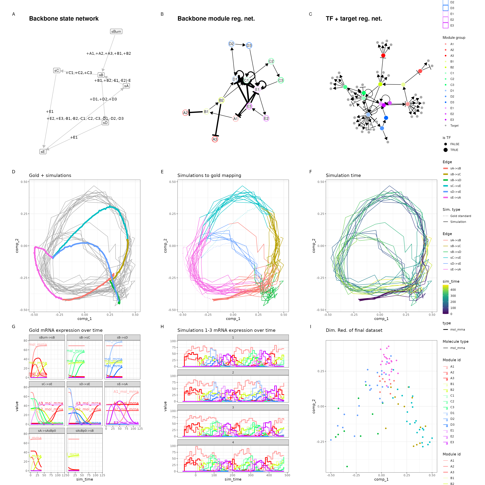
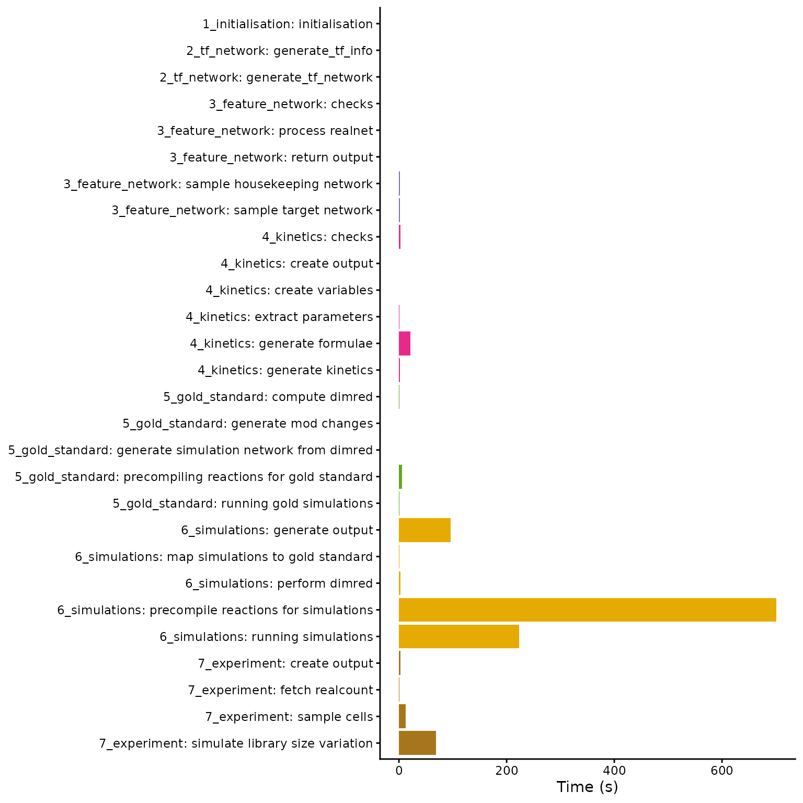
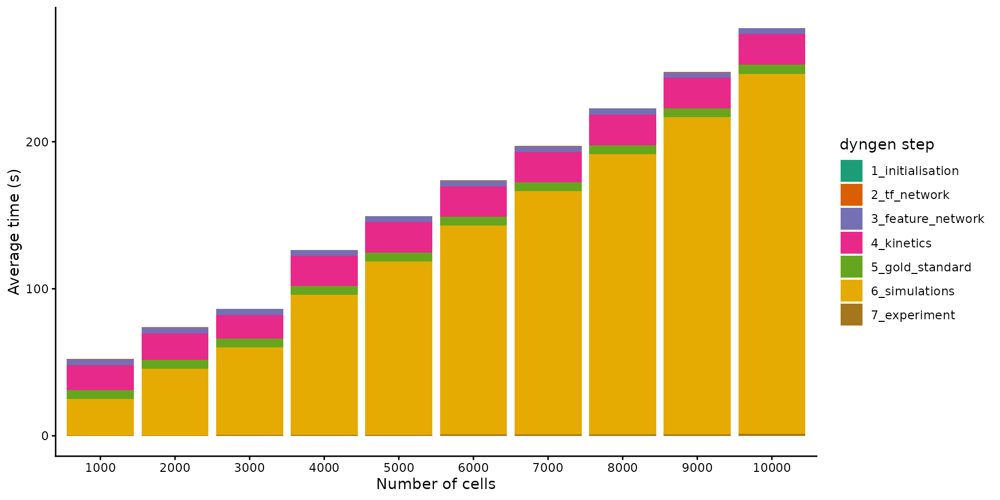
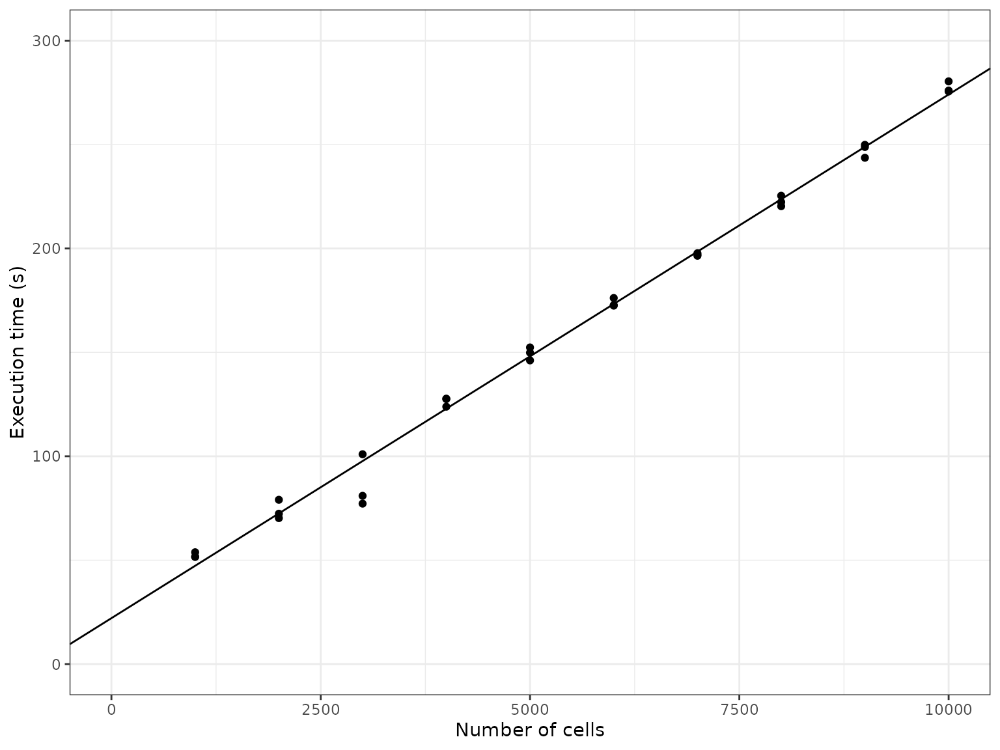
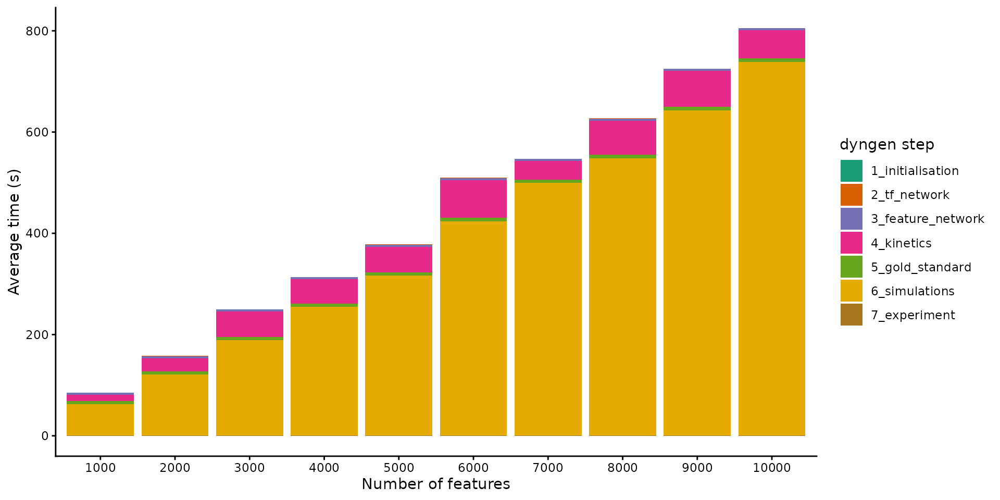

Advanced: On scalability and runtime
Source:vignettes/advanced_topics/scalability_and_runtime.Rmd
scalability_and_runtime.RmdIn this vignette, we will take a look at the runtime of dyngen as the number of genes and the number of cells sampled is increased. We’ll be using the bifurcating cycle backbone which is well known for its beautiful 3D butterfly shape!
library(dyngen)
library(tidyverse)
set.seed(1)
save_dir <- "scalability_and_runtime_runs"
if (!dir.exists(save_dir)) dir.create(save_dir, recursive = TRUE)
backbone <- backbone_bifurcating_cycle()Initial run
We’ll be running this simulation a few times, with different values for num_cells and num_features to assess the scalability of dyngen. An example of a resulting dyngen model is shown here.
num_cells <- 100
num_features <- 100
num_tfs <- nrow(backbone$module_info)
num_targets <- round((num_features - num_tfs) / 2)
num_hks <- num_features - num_targets - num_tfs
out <-
initialise_model(
backbone = backbone,
num_tfs = num_tfs,
num_targets = num_targets,
num_hks = num_hks,
num_cells = num_cells,
gold_standard_params = gold_standard_default(
census_interval = 1,
tau = 100/3600
),
simulation_params = simulation_default(
census_interval = 10,
ssa_algorithm = ssa_etl(tau = 300/3600),
experiment_params = simulation_type_wild_type(
num_simulations = num_cells / 10
)
),
verbose = FALSE
) %>%
generate_dataset(make_plots = TRUE)## as(<dgeMatrix>, "dgCMatrix") is deprecated since Matrix 1.5-0; do as(., "CsparseMatrix") instead
out$plot
We tweaked some of the parameters by running this particular backbone once with num_cells = 100 and num_features = 100 and verifying that the new parameters still yield the desired outcome. The parameters we tweaked are:
- On average, 10 cells are sampled per simulation (e.g.
num_simulations = 100andnum_cells = 1000). You could increase this ratio to get a better cell count yield from a given set of simulations, but cells from the same simulation that are temporally close will have highly correlated expression profiles. - Increased time steps
tau. This will make the Gillespie algorithm slightly faster but might result in unexpected artifacts in the simulated data. -
census_intervalincreased from 4 to 10. This will cause dyngen to store an expression profile only every 10 time units. Since the total simulation time is xxx, each simulation will result in yyy data points. Note that on average only 10 data points are sampled per simulation.
For more information on parameter tuning, see the vignette ‘Advanced: tuning the simulation parameters’.
Timing experiments
The simulations are run once with a large num_features and num_cells, a few times with varying num_cells and then once more with varying num_features. Every run is repeated three times in order to get a bit more stable time measurements. Since some of the simulations can take over 10 minutes, the timings results of the simulations are cached in the ‘scalability_and_runtime_runs’ folder.`
settings <- bind_rows(
tibble(num_cells = 10000, num_features = 10000, rep = 1), #, rep = seq_len(3)),
crossing(
num_cells = seq(1000, 10000, by = 1000),
num_features = 100,
rep = seq_len(3)
),
crossing(
num_cells = 100,
num_features = seq(1000, 10000, by = 1000),
rep = seq_len(3)
)
) %>%
mutate(filename = paste0(save_dir, "/cells", num_cells, "_feats", num_features, "_rep", rep, ".rds"))
timings <- pmap_dfr(settings, function(num_cells, num_features, rep, filename) {
if (!file.exists(filename)) {
set.seed(rep)
cat("Running num_cells: ", num_cells, ", num_features: ", num_features, ", rep: ", rep, "\n", sep = "")
num_tfs <- nrow(backbone$module_info)
num_targets <- round((num_features - num_tfs) / 2)
num_hks <- num_features - num_targets - num_tfs
out <-
initialise_model(
backbone = backbone,
num_tfs = num_tfs,
num_targets = num_targets,
num_hks = num_hks,
num_cells = num_cells,
gold_standard_params = gold_standard_default(
census_interval = 1,
tau = 100/3600
),
simulation_params = simulation_default(
census_interval = 10,
ssa_algorithm = ssa_etl(tau = 300/3600),
experiment_params = simulation_type_wild_type(
num_simulations = num_cells / 10
)
),
verbose = FALSE
) %>%
generate_dataset()
tim <-
get_timings(out$model) %>%
mutate(rep, num_cells, num_features)
write_rds(tim, filename, compress = "gz")
}
read_rds(filename)
})
timings_gr <-
timings %>%
group_by(group, task, num_cells, num_features) %>%
summarise(time_elapsed = mean(time_elapsed), .groups = "drop")
timings_sum <-
timings %>%
group_by(num_cells, num_features, rep) %>%
summarise(time_elapsed = sum(time_elapsed), .groups = "drop")Simulate a large dataset (10k × 10k)
Below is shown the timings of each of the steps in simulating a dyngen dataset containing 10’000 genes and 10’000 features. The total simulation time required is 1147 seconds, most of which is spent performing the simulations itself.
timings0 <-
timings_gr %>%
filter(num_cells == 10000, num_features == 10000) %>%
mutate(name = forcats::fct_rev(forcats::fct_inorder(paste0(group, ": ", task))))
ggplot(timings0) +
geom_bar(aes(x = name, y = time_elapsed, fill = group), stat = "identity") +
scale_fill_brewer(palette = "Dark2") +
theme_classic() +
theme(legend.position = "none") +
coord_flip() +
labs(x = NULL, y = "Time (s)", fill = "dyngen stage")
Increasing the number of cells
By increasing the number of cells from 1000 to 10’000 whilst keeping the number of features fixed, we can get an idea of how the simulation time scales w.r.t. the number of cells.
timings1 <-
timings_gr %>%
filter(num_features == 100) %>%
group_by(num_cells, num_features, group) %>%
summarise(time_elapsed = sum(time_elapsed), .groups = "drop")
ggplot(timings1) +
geom_bar(aes(x = forcats::fct_inorder(as.character(num_cells)), y = time_elapsed, fill = forcats::fct_inorder(group)), stat = "identity") +
theme_classic() +
scale_fill_brewer(palette = "Dark2") +
labs(x = "Number of cells", y = "Average time (s)", fill = "dyngen step")
It seems the execution time scales linearly w.r.t. the number of cells. This makes sense, because as the number of cells are increased, so do we increase the number of simulations made (which is not necessarily mandatory). Since the simulations are independent of each other and take up the most time, the execution time will scale linearly.
ggplot(timings_sum %>% filter(num_features == 100)) +
theme_bw() +
geom_point(aes(num_cells, time_elapsed)) +
scale_x_continuous(limits = c(0, 10000)) +
scale_y_continuous(limits = c(0, 300)) +
geom_abline(intercept = 22.097, slope = 0.0252) +
labs(x = "Number of cells", y = "Execution time (s)")
Increasing the number of features
By increasing the number of features from 1000 to 10’000 whilst keeping the number of cells fixed, we can get an idea of how the simulation time scales w.r.t. the number of features
timings2 <-
timings_gr %>%
filter(num_cells == 100) %>%
group_by(num_cells, num_features, group) %>%
summarise(time_elapsed = sum(time_elapsed), .groups = "drop")
ggplot(timings2) +
geom_bar(aes(x = forcats::fct_inorder(as.character(num_features)), y = time_elapsed, fill = forcats::fct_inorder(group)), stat = "identity") +
theme_classic() +
scale_fill_brewer(palette = "Dark2") +
labs(x = "Number of features", y = "Average time (s)", fill = "dyngen step")
It seems the execution time also scales linearly w.r.t. the number of features. As more genes are added to the underlying gene regulatory network, the density of the graph doesn’t change, so it makes sense that the execution time also scales linearly w.r.t. the number of features.
ggplot(timings_sum %>% filter(num_cells == 100)) +
theme_bw() +
geom_point(aes(num_features, time_elapsed)) +
scale_x_continuous(limits = c(0, 10000)) +
scale_y_continuous(limits = c(0, 850)) +
geom_abline(intercept = 0.5481, slope = 0.07988) +
labs(x = "Number of features", y = "Execution time (s)")
Execution platform
These timings were measured using 30 (out of 32) threads using a AMD Ryzen 9 5950X clocked at 3.4GHz.
Session info:
## R version 4.2.1 (2022-06-23)
## Platform: x86_64-pc-linux-gnu (64-bit)
## Running under: Ubuntu 20.04.5 LTS
##
## Matrix products: default
## BLAS: /usr/lib/x86_64-linux-gnu/blas/libblas.so.3.9.0
## LAPACK: /usr/lib/x86_64-linux-gnu/lapack/liblapack.so.3.9.0
##
## locale:
## [1] LC_CTYPE=C.UTF-8 LC_NUMERIC=C LC_TIME=C.UTF-8
## [4] LC_COLLATE=C.UTF-8 LC_MONETARY=C.UTF-8 LC_MESSAGES=C.UTF-8
## [7] LC_PAPER=C.UTF-8 LC_NAME=C LC_ADDRESS=C
## [10] LC_TELEPHONE=C LC_MEASUREMENT=C.UTF-8 LC_IDENTIFICATION=C
##
## attached base packages:
## [1] stats graphics grDevices utils datasets methods base
##
## other attached packages:
## [1] dyngen_1.0.4 forcats_0.5.2 stringr_1.4.1 dplyr_1.0.10
## [5] purrr_0.3.4 readr_2.1.2 tidyr_1.2.1 tibble_3.1.8
## [9] ggplot2_3.3.6 tidyverse_1.3.2
##
## loaded via a namespace (and not attached):
## [1] fs_1.5.2 dynutils_1.0.6 lubridate_1.8.0
## [4] RColorBrewer_1.1-3 httr_1.4.4 rprojroot_2.0.3
## [7] tools_4.2.1 backports_1.4.1 bslib_0.4.0
## [10] irlba_2.3.5 utf8_1.2.2 R6_2.5.1
## [13] DBI_1.1.3 colorspace_2.0-3 withr_2.5.0
## [16] gridExtra_2.3 tidyselect_1.1.2 proxyC_0.3.2
## [19] curl_4.3.2 compiler_4.2.1 textshaping_0.3.6
## [22] cli_3.4.0 rvest_1.0.3 RcppXPtrUtils_0.1.2
## [25] xml2_1.3.3 desc_1.4.2 labeling_0.4.2
## [28] sass_0.4.2 scales_1.2.1 pbapply_1.5-0
## [31] pkgdown_2.0.6 systemfonts_1.0.4 digest_0.6.29
## [34] rmarkdown_2.16 pkgconfig_2.0.3 htmltools_0.5.3
## [37] highr_0.9 dbplyr_2.2.1 fastmap_1.1.0
## [40] rlang_1.0.5 readxl_1.4.1 jquerylib_0.1.4
## [43] generics_0.1.3 farver_2.1.1 jsonlite_1.8.0
## [46] googlesheets4_1.0.1 magrittr_2.0.3 GillespieSSA2_0.2.8
## [49] patchwork_1.1.2 Matrix_1.5-1 Rcpp_1.0.9
## [52] munsell_0.5.0 fansi_1.0.3 viridis_0.6.2
## [55] lifecycle_1.0.2 stringi_1.7.8 yaml_2.3.5
## [58] ggraph_2.0.6 MASS_7.3-58.1 grid_4.2.1
## [61] parallel_4.2.1 ggrepel_0.9.1 crayon_1.5.1
## [64] lattice_0.20-45 graphlayouts_0.8.1 haven_2.5.1
## [67] hms_1.1.2 knitr_1.40 pillar_1.8.1
## [70] igraph_1.3.5 codetools_0.2-18 reprex_2.0.2
## [73] glue_1.6.2 evaluate_0.16 remotes_2.4.2
## [76] RcppParallel_5.1.5 modelr_0.1.9 vctrs_0.4.1
## [79] tzdb_0.3.0 tweenr_2.0.2 cellranger_1.1.0
## [82] gtable_0.3.1 polyclip_1.10-0 assertthat_0.2.1
## [85] cachem_1.0.6 lmds_0.1.0 xfun_0.33
## [88] ggforce_0.3.4 broom_1.0.1 tidygraph_1.2.2
## [91] viridisLite_0.4.1 ragg_1.2.2 googledrive_2.0.0
## [94] gargle_1.2.1 memoise_2.0.1 ellipsis_0.3.2